Urchin Integration mit AdWords
Urchin 6.6 integriert verschiedene Funktionen von AdWords wie beispielsweise das Keyword-Tool, AdWords Editor und Empfehlungen für Tagesbudgets auf Kampagnenebene.
Vor Verwendung dieser Tools müssen CPC- und Kontendaten für AdWords heruntergeladen werden. Die AdWords-CPC-Daten können Sie nur manuell über das Einstellungsdialogfeld für CPC-Quellen oder über den CPC-Planer herunterladen.
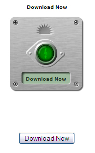
Die AdWords-Kontodaten reflektieren die aktuelle Struktur Ihres Kontos in AdWords. Beim automatischen Download dieser Daten wird für eine bestimmte CPC-Quelle der Parameter "Kontodaten - Downloadintervall" berücksichtigt, oder der Download erfolgt gemäß den globalen Einstellungen für die CPC-Quellenaktualisierung. Falls Sie die AdWords-Kontodaten sofort herunterladen möchten, stellen Sie den "Kontodaten - Downloadintervall" auf fünf Minuten ein.
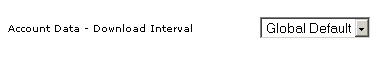
Die neue Ansicht "Anzeigenkunde" und der neue Abschnitt "Werbeoptimierung" dienen besonders den Nutzern, die vorrangig auf AdWords bezogene Funktionen verwenden. Die Ansicht "Anzeigenkunde" und der Abschnitt "Werbeoptimierung" können in den Berichteinstellungen im Profil aktiviert bzw. deaktiviert werden.
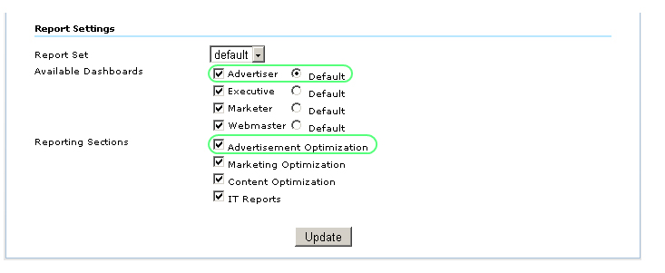
In Urchin 6.6 können die Ansicht "Anzeigenkunde" und der Abschnitt "Werbeoptimierung" auch für einzelne Nutzer und Gruppen aktiviert bzw. deaktiviert werden. Rufen Sie "Profileinstellungen" -> "Nutzer" auf. Wählen Sie in "Zugriff gewährt" den Nutzer aus, und klicken Sie auf "Dashboard überschreiben". Deaktivieren Sie im geöffneten Fenster die Option "Profilstandard verwenden". Aktivieren bzw. deaktivieren Sie Dashboards und Berichtabschnitte nach Bedarf, und klicken Sie auf "Aktualisieren".
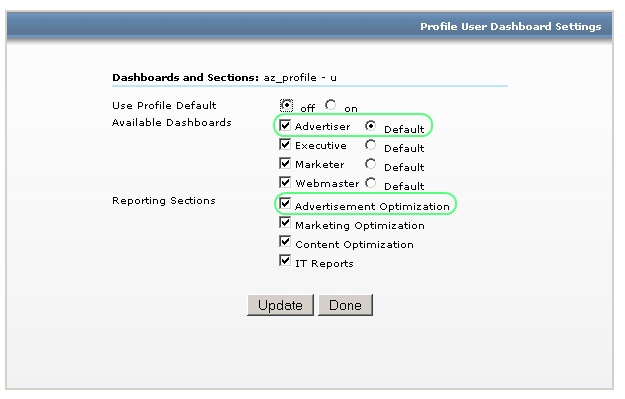
Sie können dem entsprechenden Nutzer über "Nutzereinstellungen" -> "Einstellungen" Zugriff auf AdWords-Tools gewähren oder die Zugriffsberechtigung widerrufen.
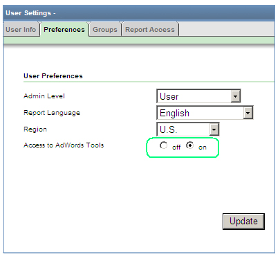
Die Ansicht "Anzeigenkunde" umfasst das Dashboard "Marketing-Zusammenfassung" und fünf grundlegende, durch AdWords-Tools und -Links erweiterte Berichte:
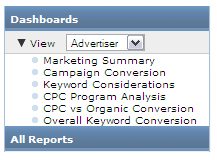
Der Berichtabschnitt "Werbeoptimierung" besteht aus den drei Berichtgruppen "Ergebnisse der Marketingkampagnen", "Suchmaschinenmarketing" und "CPC-Struktur". Die folgenden Berichte sind enthalten:
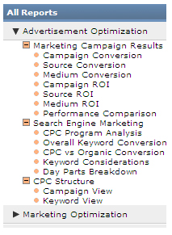
Die Berichte im Abschnitt "Werbeoptimierung" umfassen eine Reihe von auf AdWords bezogenen, neuen Funktionen, darunter das Keyword-Tool, Tag-Manager und das Exportieren in AdWords Editor-Dateien (AES).
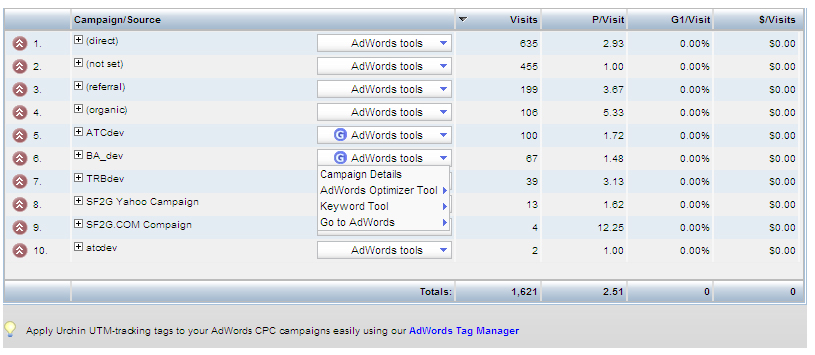 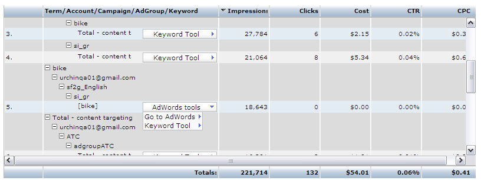
Budgetbenachrichtigungen
Eine Budgetbenachrichtigung basiert auf den in AdWords verfügbaren Empfehlungen für Tagesbudgets. Sie werden in der Nachricht darüber informiert, dass das Tagesbudget auf Kampagnenebene in AdWords verbessert werden kann. Durch die Erhöhung Ihres Budgets auf den empfohlenen Wert können Sie die Präsenz Ihrer Anzeigen steigern und dazu beitragen, dass Ihre Anzeigen viel mehr Klicks pro Monat verzeichnen.
Platzieren Sie zum Anzeigen von Empfehlungen den Mauszeiger im Abschnitt "AdWords-Benachrichtigungen" über dem Kampagnennamen. Ein Textfeld mit Informationen über die ausgewählte Kampagne wird angezeigt: 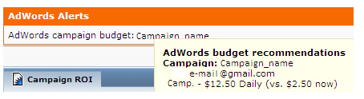
Klicken Sie zum Aktualisieren von AdWords-Budgetbenachrichtigungen auf den Link "Jetzt Plan aktualisieren".
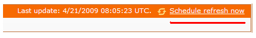
Budgetbenachrichtigungen werden in der Ansicht "Anzeigenkunde" und dem Abschnitt "Werbeoptimierung" in den Berichten "Marketing-Zusammenfassung", "Kampagnen-Conversions" und "ROI pro Kampagne" angezeigt.